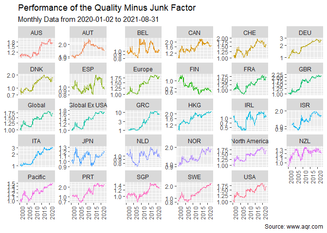

Get the datasets computed by the AQR research team in R.
Installation
You can install the development version of aqrr from GitHub with:
# install.packages("devtools")
devtools::install_github("Reckziegel/aqqr")Toy Example
library(dplyr)
library(ggplot2)
library(aqrr)
# Quality Minus Junk Factor
qmj <- aqr_qmj_monthly()
qmj <- na.omit(qmj)
qmj
#> # A tibble: 5,751 x 3
#> date name value
#> <date> <chr> <dbl>
#> 1 1957-09-03 USA 0.00701
#> 2 1957-10-31 USA 0.00271
#> 3 1957-11-30 USA -0.00897
#> 4 1957-12-31 USA -0.00327
#> 5 1958-11-03 USA -0.0252
#> 6 1958-04-03 USA 0.00256
#> 7 1958-06-03 USA 0.00570
#> 8 1958-09-03 USA -0.00812
#> 9 1958-10-31 USA -0.00814
#> 10 1958-11-30 USA 0.0116
#> # ... with 5,741 more rows
regions_to_exclude <- c("Global Ex USA", "North America", "Global", "Europe", "Pacific")
qmj |>
# data manipulation
filter(date >= "2000-01-02", !name %in% regions_to_exclude) |>
group_by(name) |>
na.omit() |>
mutate(performance = cumprod(exp(value))) |> # cumulative performance
ungroup() |>
# plot
ggplot(aes(x = date, y = performance, color = name)) +
geom_line(show.legend = FALSE) +
scale_y_log10() +
facet_wrap(~name, scales = "free_y") +
theme(axis.text.x = element_text(angle = 90)) +
labs(title = "Performance of the Quality Minus Junk Factor",
subtitle = "Monthly Data from 2020-01-02 to 2021-08-31",
caption = "Source: www.aqr.com",
x = NULL,
y = NULL)
Functions
See the all available functions in the reference page.
References
Asness, Cliff S. and Frazzini, Andrea and Pedersen, Lasse Heje, Quality Minus Junk (June 5, 2017). Available at SSRN: https://ssrn.com/abstract=2312432 or http://dx.doi.org/10.2139/ssrn.2312432
Asness, Cliff S. and Moskowitz, Tobias J. and Moskowitz, Tobias J. and Pedersen, Lasse Heje, Value and Momentum Everywhere (June 1, 2012). Chicago Booth Research Paper No. 12-53, Fama-Miller Working Paper, Available at SSRN: https://ssrn.com/abstract=2174501 or http://dx.doi.org/10.2139/ssrn.2174501
Frazzini, Andrea and Pedersen, Lasse Heje, Betting Against Beta (October 9, 2011). Swiss Finance Institute Research Paper No. 12-17, Available at SSRN: https://ssrn.com/abstract=2049939 or http://dx.doi.org/10.2139/ssrn.2049939
Ilmanen, Antti S. and Israel, Ronen and Moskowitz, Tobias J. and Moskowitz, Tobias J. and Thapar, Ashwin K and Lee, Rachel, How Do Factor Premia Vary Over Time? A Century of Evidence (February 18, 2021). Available at SSRN: https://ssrn.com/abstract=3400998 or http://dx.doi.org/10.2139/ssrn.3400998